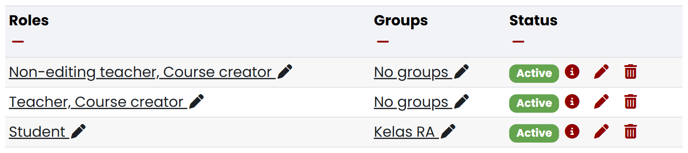
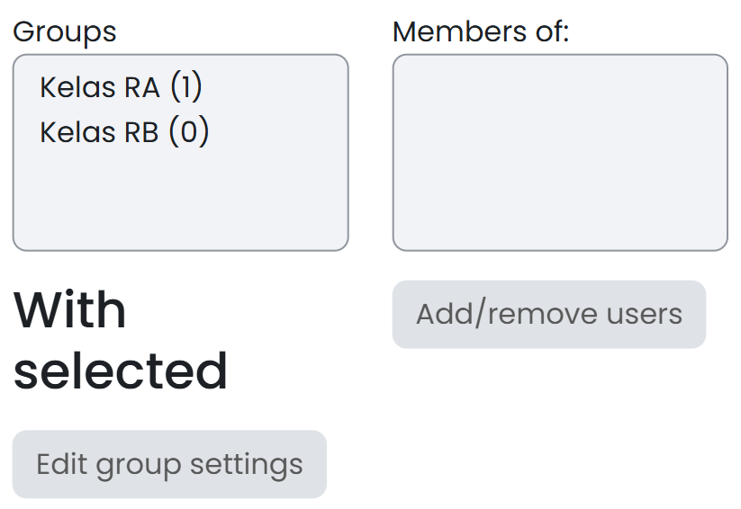
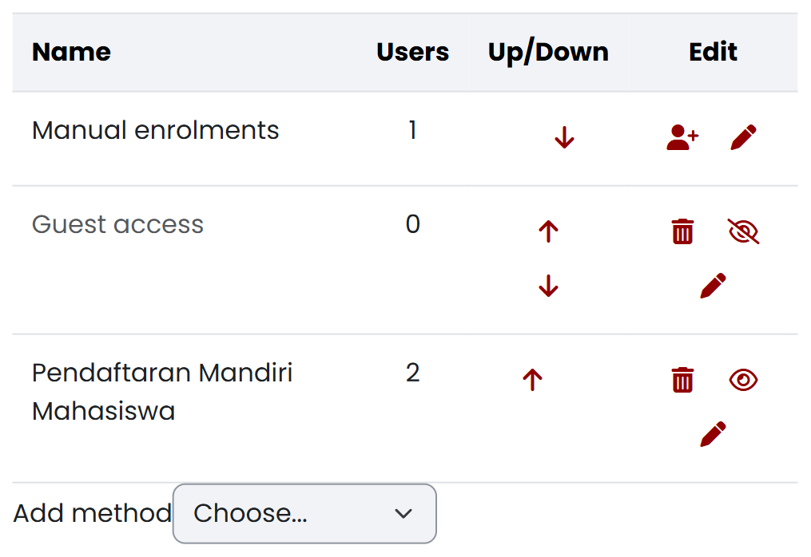
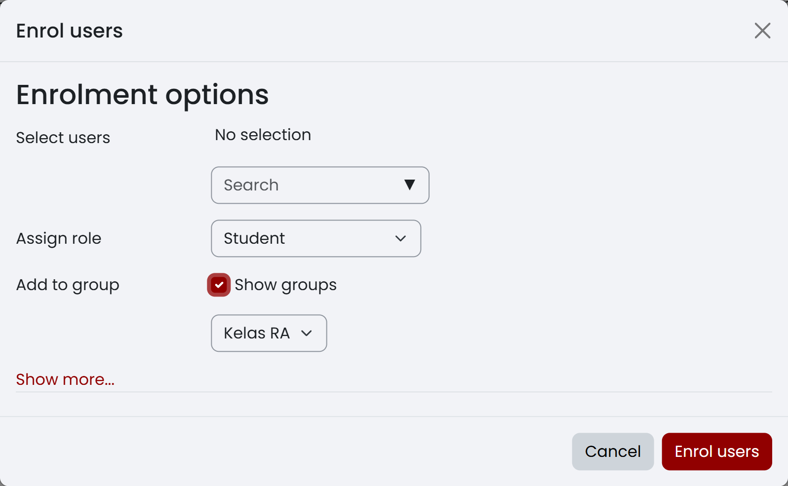
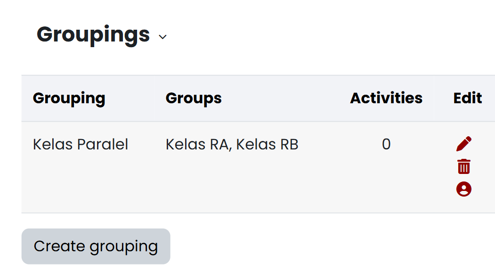

3 Mengelola Kepesertaan, Kelas Paralel, dan Peran
Setelah membuat mata kuliah, dosen perlu mengelola siapa saja yang menjadi peserta di dalamnya: dosen pengampu lain, asisten, dan mahasiswa. Bagian ini mengulas pengelolaan peserta tersebut lewat dua fitur Moodle, Group dan Grouping. Yang dibahas berturut-turut adalah menetapkan dosen lain dan asisten sebagai pengajar, mengelola mahasiswa lewat group — kelas paralel, pendaftaran mandiri, kelompok otomatis, dan pendaftaran manual — lalu menggabungkan beberapa group dalam satu grouping ketika sebuah aktivitas atau pembatasan akses perlu menyasar gabungan kelompok sekaligus.
Group berisi peserta, misalnya Kelas RA dan Kelas RB. Grouping adalah kumpulan beberapa group yang diarahkan ke aktivitas yang sama. Gunakan grouping hanya ketika satu aktivitas perlu melayani gabungan kelompok tertentu.
Groups pada aktivitas menentukan interaksi antarkelompok:
| Mode | Dampak pada aktivitas yang mendukung kelompok |
|---|---|
| No groups | Semua peserta menggunakan aktivitas yang sama tanpa pemisahan kelompok |
| Separate groups | Mahasiswa berinteraksi melalui kelompoknya sendiri dan tidak melihat kelompok lain |
| Visible groups | Mahasiswa berinteraksi melalui kelompoknya sendiri, tetapi dapat melihat kelompok lain |
Perbedaan Hak Akses Enrolment dan Pengelompokan Group
Enrolment memberi seseorang akses ke mata kuliah dan menetapkan perannya. Group mengatur pembagian peserta yang sudah terdaftar. Mahasiswa yang sudah masuk ke Kelas RA tetap harus terdaftar sebagai peserta mata kuliah.
Mode Kelompok Bukan Pembatasan Akses
Separate groups mengatur interaksi pada aktivitas yang mendukung kelompok. Jika suatu bahan, aktivitas, atau bagian mata kuliah hanya boleh terlihat oleh kelompok tertentu, atur Restrict access secara terpisah.
3.1 Menetapkan dosen lain dan asisten
Sebelum menambahkan mahasiswa, tetapkan dulu dosen pengampu lain dan asisten yang akan membantu mengelola mata kuliah ini. Anda memerlukan kewenangan mendaftarkan pengguna dan menetapkan peran, calon dosen/asisten sudah mempunyai akun New E-Learning ITERA, dan penanggung jawab mata kuliah sudah menentukan apakah mereka perlu menyunting konten atau hanya menjalankan tugas terbatas. Buka Participants, lalu pilih Enrol users, dan ikuti langkah berikut:
- Cari akun dosen atau asisten melalui Select users.
- Pilih Teacher untuk pengajar yang perlu mengubah isi dan pengaturan mata kuliah.
- Pilih Non-editing teacher untuk asisten atau dosen tamu yang hanya memerlukan Participants, Grades, dan Reports, tanpa kewenangan mengubah mata kuliah atau mengelola peserta dan kelompok.
- Periksa pemilih group. Kosongkan pilihan untuk pengguna pengajar — jika formulir tidak menyediakan pilihan kosong, keluarkan pengguna dari group melalui Participants → Groups → Add/remove users setelah enrolment selesai.
- Pilih Enrol users.
- Periksa peran yang tampil di samping nama pengguna pada Participants.
Nama pengguna tampil pada Participants dengan peran Teacher atau Non-editing teacher seperti terlihat pada Gambar 3.1. Teacher dipakai hanya bagi pengajar yang memang perlu menyunting mata kuliah — peran ini bisa mengaktifkan mode sunting, membuka pengaturan mata kuliah, mendaftarkan peserta, dan mengelola group. Non-editing teacher dipakai untuk tugas yang cukup dilakukan melalui Participants, Grades, dan Reports; peran ini dapat membuka ketiga menu tersebut, tetapi tidak memperoleh Edit mode, Settings, Enrol users, Groups, atau Groupings.

Kelas RA
Ketersediaan menu Grades hanya menunjukkan bahwa pengguna dapat membuka halaman nilai; menu tersebut tidak dengan sendirinya memberi kewenangan untuk menilai aktivitas, karena kewenangan itu bergantung pada jenis aktivitas dan pengaturan peran. Gambar 3.2 memperlihatkan menu navigasi mata kuliah yang dilihat akun Non-editing teacher sendiri: hanya Course, Participants, Grades, dan More, tanpa Settings atau Edit mode.

Jika peran Teacher tidak dapat dipilih, akun Anda tidak berwenang menetapkan dosen lain — minta pengelola mata kuliah atau administrator melakukannya. Jika Non-editing teacher tidak tampil, jangan menggantinya dengan peran yang lebih tinggi; minta pengelola Moodle menentukan peran yang tepat. Jika akun tidak muncul dalam hasil pencarian, hentikan proses dan minta pengelola Moodle atau layanan dukungan memeriksa akun — jangan memilih akun lain yang namanya mirip. Jika pengguna sudah terdaftar sebagai mahasiswa, ubah perannya hanya setelah memastikan bahwa pengguna memang ditugaskan sebagai pengajar. Jika asisten tidak dapat menjalankan tugas yang diberikan, minta pengelola memeriksa kemampuan perannya alih-alih menaikkan peran tanpa penilaian kebutuhan.
Setelah pendaftaran selesai, minta dosen atau asisten masuk dengan akunnya sendiri dan memastikan mata kuliah tampil, lalu periksa menu yang dapat dibuka sebelum pekerjaan dibagikan.
3.2 Group
Kelola mahasiswa lewat group dengan empat cara berikut, diurutkan dari yang paling sering dipakai ke yang paling jarang: membuat kelas paralel, mengizinkan mahasiswa mendaftar sendiri, membagi kelompok tugas secara otomatis, dan — kalau ketiganya tidak cukup — mendaftarkan mahasiswa satu per satu secara manual.
3.2.1 Membuat kelas paralel dengan Groups
Gunakan group untuk mengelompokkan mahasiswa ke dalam kelas paralel seperti Kelas RA dan Kelas RB. Anda memerlukan peran Dosen (Teacher) atau kewenangan mengelola group, mata kuliah yang benar sudah terbuka, dan nama kelas paralel yang sudah ditetapkan. Buka Participants → Groups, lalu ikuti langkah berikut:
- Pilih Create group.
- Isi Group name dengan nama kelas paralel yang mudah dibedakan.
- Pada Group membership visibility, pilih Visible agar anggota kelompok dapat melihat keanggotaannya — tetapkan pilihan ini sebelum menambahkan anggota karena pengaturan tidak dapat diubah setelah anggota masuk.
- Pilih Save changes, lalu ulangi langkah 1–3 untuk setiap kelas paralel.
- Pilih satu group, lalu pilih Add/remove users.
- Pilih mahasiswa pada daftar Potential members, lalu pilih Add. Ulangi sampai setiap mahasiswa berada pada kelas yang benar.
Daftar Groups menampilkan setiap kelas paralel seperti terlihat pada Gambar 3.3; ketika satu kelas dipilih, anggota kelas tersebut tampil pada daftar anggota, dan pengaturan Group membership visibility menampilkan Visible.

Jika Groups tidak tampil, akun Anda tidak mempunyai kewenangan mengelola kelompok — peran Student dan Non-editing teacher tidak dapat mengelola group, minta dosen pengelola mata kuliah melakukannya. Jika seorang mahasiswa tidak ada pada Potential members, daftarkan mahasiswa tersebut ke mata kuliah terlebih dahulu. Jika seorang mahasiswa masuk ke kelas yang salah, gunakan Add/remove users untuk memindahkan keanggotaannya; kalau group-nya dibuat oleh mekanisme enrolment otomatis, perubahan anggota mungkin harus dilakukan lewat mekanisme yang sama. Sebelum aktivitas per kelas diterbitkan, buka Groups → Overview dan periksa mahasiswa yang belum mempunyai group.
3.2.2 Mengizinkan mahasiswa mendaftar sendiri
Metode Self enrolment (Mahasiswa) memungkinkan mahasiswa mendaftarkan dirinya sendiri tanpa menunggu didaftarkan satu per satu. Metode ini harus tersedia pada mata kuliah, Anda memerlukan kewenangan mengatur metode enrolment, dan periode pendaftaran serta siapa yang boleh menerima akses harus sudah ditentukan — ketersediaan dan pengaturan self enrolment sendiri dapat dibatasi oleh pengelola Moodle, dan fitur ini tidak boleh dipakai untuk memberi peran dosen atau asisten. Buka Participants → Enrolment methods → Self enrolment (Mahasiswa), lalu ikuti langkah berikut:
- Temukan Self enrolment (Mahasiswa) dan pastikan ikon mata menunjukkan metode dalam keadaan aktif.
- Buka pengaturan metode melalui ikon sunting.
- Pastikan Default assigned role adalah Student.
- Atur tanggal mulai, tanggal berakhir, durasi enrolment, dan jumlah maksimum peserta sesuai kebutuhan kelas.
- Jika formulir menampilkan Enrolment key, buat kunci mata kuliah yang tidak mudah ditebak.
- Jika mahasiswa harus langsung masuk kelas paralel, buka setiap group dan tetapkan kunci kelompok yang berbeda untuk
Kelas RA,Kelas RB, dan kelas lainnya. - Kembali ke pengaturan Self enrolment (Mahasiswa). Jika Use group enrolment keys tersedia, pilih Yes.
- Pilih Save changes.
- Bagikan kunci kelompok hanya kepada mahasiswa pada kelas yang sesuai — mahasiswa memasukkan kunci kelompok sebagai pengganti kunci mata kuliah.
- Minta satu mahasiswa melakukan pendaftaran awal, lalu pastikan namanya tampil sebagai Student dan masuk ke group yang benar.
Metode Self enrolment (Mahasiswa) tampil aktif di antara metode enrolment lain seperti terlihat pada Gambar 3.4. Mahasiswa yang memenuhi ketentuan dapat mendaftarkan dirinya dan kemudian muncul pada Participants dengan peran Student; ketika Use group enrolment keys diaktifkan, kunci kelompok mendaftarkan mahasiswa sekaligus menempatkannya ke kelas paralel yang sesuai.

Kunci Enrolment per Group
Pengaturan Use group enrolment keys mengizinkan satu kunci kelompok mendaftarkan mahasiswa sekaligus memasukkannya ke group. Gunakan kunci yang berbeda untuk setiap kelas paralel. Jika opsi tersebut tidak tersedia pada mata kuliah lain, gunakan satu kunci mata kuliah dan tempatkan mahasiswa ke kelas paralel melalui Groups.
Jika Self enrolment (Mahasiswa) tidak ada, jangan menambah metode lain tanpa persetujuan pengelola Moodle — gunakan enrolment manual. Jika ikon mata tertutup, aktifkan metode hanya jika Anda mempunyai kewenangan dan mata kuliah memang menerima pendaftaran mandiri. Jika mahasiswa menerima pesan bahwa pendaftaran ditutup, periksa tanggal, durasi, jumlah maksimum peserta, dan kunci enrolment. Jika mahasiswa masuk tanpa kelas paralel, tambahkan mahasiswa ke group secara manual; jika kunci kelompok hanya mendaftarkan mahasiswa ke mata kuliah tanpa memasukkannya ke group, periksa Use group enrolment keys, peran bawaan, dan kunci pada pengaturan group. Periksa Participants setelah masa pendaftaran berakhir, dan nonaktifkan self enrolment kalau mata kuliah tidak lagi menerima peserta baru.
3.2.3 Membuat kelompok tugas secara otomatis
Gunakan Auto-create groups ketika peserta yang sudah terdaftar perlu dibagi menjadi banyak kelompok berukuran seragam. Penyaring Select members from role menyediakan All, Manager, Course creator, Teacher, Non-editing teacher, dan Student — pilihan No roles tidak tersedia. Untuk kelompok tugas mahasiswa, pilih Student agar dosen dan asisten tidak ikut terbagi.
Sebelum mulai, pastikan mahasiswa sudah terdaftar sebagai Mahasiswa (Student), aturan jumlah kelompok atau jumlah anggota per kelompok sudah ditetapkan, dan mahasiswa yang harus tetap berada dalam kelas paralel tertentu sudah dapat disaring melalui group atau grouping asal. Buka Participants → Groups → Auto-create groups, lalu ikuti langkah berikut:
- Isi Naming scheme. Gunakan
Kelompok @untuk menghasilkan nama berhuruf atauKelompok #untuk menghasilkan nama bernomor. - Pada Auto create based on, pilih apakah jumlah ditentukan berdasarkan banyak kelompok atau banyak anggota per kelompok.
- Isi Group/member count sesuai rancangan tugas.
- Aktifkan Prevent last small group jika Anda ingin menghindari kelompok terakhir yang terlalu kecil.
- Pada Select members from role, pilih Student. Jangan memilih All karena pilihan tersebut dapat memasukkan pengguna dengan peran lain.
- Aktifkan Ignore users in groups jika mahasiswa yang sudah mempunyai kelompok tugas tidak boleh dibagi kembali.
- Pilih kelompok atau grouping asal apabila pembagian harus dibatasi pada kelas paralel tertentu — pilih None pada kedua sumber jika seluruh mahasiswa berperan Student boleh dibagi.
- Pilih Preview dan periksa nama kelompok, jumlah anggota, serta peserta yang masuk pada setiap kelompok.
- Kembali ke pengaturan jika hasil pratinjau belum benar. Jika hasil sudah sesuai, pilih Submit untuk membuat kelompok.
Pratinjau menampilkan jumlah kelompok, daftar anggota, dan jumlah pengguna tanpa membuat kelompok — pratinjau ini tidak menggantikan pemeriksaan daftar peserta. Setelah Submit dipilih, daftar Groups menampilkan kelompok baru dengan pola nama dan jumlah anggota yang sama.
Jika mahasiswa tidak muncul pada pratinjau, periksa apakah mahasiswa terdaftar dengan peran Student dan termasuk dalam group atau grouping asal yang dipilih. Jika pengguna selain mahasiswa ikut terbagi, kembali ke pengaturan dan pilih Mahasiswa (Student) pada penyaring peran. Jika kelompok terakhir terlalu kecil, aktifkan Prevent last small group atau ubah jumlah anggota per kelompok. Jika mahasiswa dari kelas paralel berbeda tercampur, buat kelompok secara terpisah untuk setiap group atau grouping asal. Sebelum kelompok dipakai pada aktivitas, buka Groups → Overview dan cocokkan mahasiswa tanpa kelompok serta keanggotaan ganda.
3.2.4 Mendaftarkan mahasiswa secara manual
Pendaftaran manual cocok untuk kasus yang tidak tercakup oleh self enrolment atau auto-create groups — misalnya mendaftarkan satu-dua mahasiswa susulan. Mahasiswa yang didaftarkan harus sudah mempunyai akun pada kuliah2.itera.ac.id, Anda memerlukan kewenangan mendaftarkan peserta, dan Manual enrolments harus dalam keadaan aktif pada Participants → Enrolment methods; kewenangan ini hanya berlaku pada mata kuliah yang Anda kelola, dan tidak dimiliki Student maupun Non-editing teacher. Buka Participants, lalu pilih Enrol users.
Pemeriksaan Group Sebelum Pendaftaran Pengguna
Formulir dapat memilih group pertama secara otomatis, misalnya Kelas RA. Jangan menganggap pilihan awal sudah benar. Konfirmasikan kelas setiap pengguna, atau kosongkan pilihan group jika pengguna tidak boleh masuk ke kelompok mana pun. Jika pilihan kosong tidak tersedia, selesaikan enrolment lalu keluarkan pengguna dari group melalui Participants → Groups → Add/remove users.
Gambar 3.5 memperlihatkan formulir Enrol users dengan Assign role dan Add to group terbuka; perhatikan Kelas RA yang sudah terpilih pada contoh ini.

Kelas RA yang terpilih otomatis
Ikuti langkah berikut untuk mendaftarkan mahasiswa:
- Pada Assign roles, pilih Student. Pilihan lain yang tersedia adalah Teacher dan Non-editing teacher.
- Cari mahasiswa melalui Select users, lalu pilih akun yang identitasnya tepat.
- Pilih Show more jika Anda perlu mengatur tanggal mulai atau durasi enrolment.
- Periksa pilihan group. Pilih kelas paralel yang benar dan pastikan
Kelas RAtidak dipakai hanya karena terpilih otomatis. - Pilih Enrol users.
- Ulangi langkah untuk mahasiswa lain yang belum terdaftar.
Nama mahasiswa tampil pada Participants dengan peran Mahasiswa (Student), dan kolom group menampilkan kelas paralel jika kelas ditetapkan saat enrolment.
Jika akun tidak ditemukan, cari dengan nama lengkap dan cocokkan identitas yang ditampilkan — jangan memilih akun hanya karena namanya serupa. Jika pencarian tetap tidak menghasilkan akun yang tepat, hentikan pendaftaran dan minta pengelola Moodle atau layanan dukungan memeriksa status akun tersebut. Jika Enrol users tidak tampil, periksa peran Anda dan status Manual enrolments. Jika mahasiswa sudah terdaftar tetapi belum masuk kelas, tambahkan melalui Participants → Groups → Add/remove users; jika pilihan group tidak muncul pada formulir enrolment, selesaikan enrolment terlebih dahulu, lalu atur group melalui menu Groups. Setelah pendaftaran selesai, saring halaman Participants berdasarkan peran dan group, lalu cocokkan jumlah mahasiswa dengan daftar kelas resmi.
Pembentukan Kelompok Mandiri Mahasiswa
Mahasiswa tidak mempunyai kewenangan Participants → Groups untuk membuat atau mengubah kelompok — pengelolaan group tetap ada di tangan dosen pengelola mata kuliah, bukan bagian dari peran Student. Kalau mahasiswa perlu membentuk kelompok tugas secara mandiri (misalnya kelompok tugas besar pilihan sendiri), tentukan jumlah anggota, tenggat, dan aturan keanggotaan terlebih dahulu; minta mahasiswa menyampaikan susunan kelompok lewat saluran resmi mata kuliah, lalu dosen yang membuat group-nya lewat Participants → Groups. Kalau mahasiswa ternyata bisa mengubah group tanpa mekanisme yang disepakati, hentikan penggunaan jalur tersebut dan minta pengelola meninjau kewenangan akun.
3.3 Menggabungkan beberapa group dalam Grouping
Gunakan grouping ketika beberapa group perlu menerima aktivitas atau pembatasan akses yang sama sekaligus — misalnya menggabungkan Kelas RA dan Kelas RB ke dalam satu grouping Kelas Paralel supaya satu tugas atau satu aturan Restrict access bisa menyasar kedua kelas tanpa memilihnya satu per satu. Kalau setiap group justru perlu diperlakukan berbeda — misalnya tugas atau bahan ajar khusus tiap kelas — cukup pakai group tanpa grouping. Jangan membuat grouping jika satu group sudah cukup.
Anda memerlukan sedikitnya dua group yang sudah tersedia dan kewenangan mengelola kelompok. Buka Participants → Groupings, lalu ikuti langkah berikut:
- Buka Participants, lalu pilih Groupings.
- Pilih Create grouping.
- Isi Grouping name, lalu pilih Save changes.
- Pada baris grouping, pilih ikon Show groups in grouping.
- Pilih group pada Potential members.
- Gunakan tombol panah untuk memindahkannya ke Existing members.
- Pilih Back to groupings.
Nama grouping tampil pada tabel Groupings, beserta group yang menjadi anggotanya, seperti terlihat pada Gambar 3.6.

Kelas Paralel berisi Kelas RA dan Kelas RB, dengan ikon Edit untuk mengubah keanggotaannya
Jika menu Groupings tidak tampil, periksa peran akun — Student dan Non-editing teacher tidak dapat mengelola grouping, minta dosen pengelola mata kuliah melakukannya. Jika group tidak muncul pada Potential members, pastikan group dibuat pada mata kuliah yang sama. Jika pilihan grouping tidak muncul pada pengaturan aktivitas, aktivitas tersebut mungkin tidak mendukung mode grup, atau pembatasan akses yang diperlukan belum diaktifkan. Ketika mengatur aktivitas yang mendukung kelompok, periksa Common module settings, pilih mode grup, lalu pilih grouping yang sesuai.